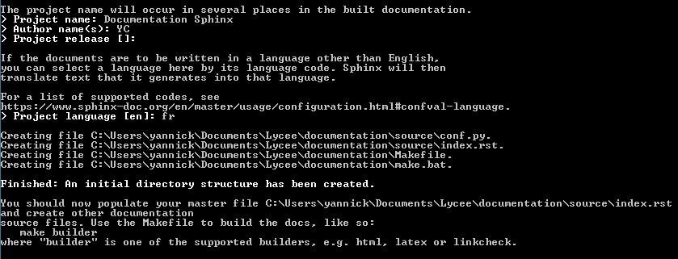
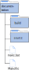

Installer son environnement#
Environnement Python#
Quel que soit votre machine et votre système d’exploitation, l’autodocumentation avec sphinx ne nécessite que le langage Python. Assurez-vous d’avoir ce langage installé. Dans le cas contraire, rendez vous sur la page de téléchargement de Python et installez-le.
Sphinx est un module Python. Comme tout module Python, on utilise la commande pip dans une console pour l’installer.
pip install sphinx
D’autres modules dépendant du module sphinx permettent d’ajouter des fonctionnalité à la construction de la documentation. On peut citer nbsphinx, sphinx-design et sphinx-book-theme.
Le module
nbsphinxpermet d’ajouter des notebook dans notre documentation.Le module
sphinx-designpermet d’ajouter quelques effets visuelsLe module
sphinx-book-themeest un theme pour nos pages web.
Important
Pour ajouter des notebook, il sera nécessaire d’installer les modules pandoc et jupyter.
Tous ces modules peuvent être installés en les plaçant dans un fichier requirements.txt et en saisissant dans une console la commande pip install -r requirements.txt.
# Module pour construire l'auto-documentation
sphinx
# Thèmes pour le rendu html
sphinx-rtd-theme
sphinx-book-theme
# Module pour améliorer l'interface html
sphinx-design
# Module pour auto-construire la doc
sphinx-autobuild
# Module pour créer des notebook jupyter
jupyter
# Module pour insérer des notebook jupyter
nbsphinx
# Module pour convertir des fichiers d'un format à un autre
pandoc
Première documentation#
Après l’installation des modules, on va créer notre première documentation avec la commande sphinx-quickstart dans une console. Mais avant, on crée un
répertoire documentation qui contiendra toute la structure et les contenus présentés ci-après.
Astuce
Ouvrir votre explorateur windows, naviguer jusqu’au dossier de documentation, puis dans la barre d’adresse, taper
cmd devant l’adresse et valider.
La console s’ouvre dans le dossier documentation. On saisit la commande sphinx-quickstart et on valide :
{kind=link}
Différentes questions s’affichent pendant la procédure.
La séparation entre le répertoire source contenant la documentation et le dossier build contenant l’export en html ou latex. Il est recommandé de ne pas les séparer mais nous allons quand même les séparer. Donc on répond
yà la question.Ensuite, on demande le nom du projet, le nom de l’auteur et la release du projet.
La langue du projet à choisir. Ici c’est
fr.
Voilà c’est fini. Ci-dessous une illustration de toute la procédure.
{kind=link}
Après exécution de la commande, la structure de notre projet est en place. Le dossier documentation contient deux dossiers source et build et 2 fichiers make.bat et Makefile.
Note
Le dossier build est vide. Aucune documentation n’est construite mais la structure est en place.
Le dossier source contient deux dossiers _static et _templates et deux fichiers. Ces 2 dossiers resteront vides jusqu’au moment où nous modifierons l’apparence du projet. Les deux fichiers sont conf.py et index.rst.
conf.py
C’est le fichier de configuration de notre projet. Il contient des informations sur la structure de notre projet, son nom, le nom de l’auteur et des informations sur les extensions que l’on peut utiliser.
index.rst
C’est notre premier fichier reStructured Text créé par défaut. C’est le point de départ, la page d’accueil, de notre documentation.
Structure du contenu#
Le dossier source va contenir tous les contenus de notre documentation. Celle-ci peut contenir des fichiers ou différents dossiers contenant de nombreux fichiers. Pour notre projet, on ajoute deux dossiers vides qui contiendront la documentation sur sphinx et et la documentation sur la syntaxe rest.
Donc au final, le dossier source a pour contenu 4 dossiers et 2 fichiers comme le montre la figure suivante.

L’installation et la mise en forme de la structure sont réalisées. Il ne reste plus qu’à construire la documentation.